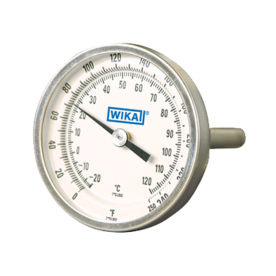

Wika Instruments
Model TI.20 Industrial Grade Bimetal Thermometer, 304 Stainless Steel Case, 2" Dial, 1/4" NPT Connection, Back Mount, 0/250 °F
Item # 20025D006G2 · per EA
- Back connection with external reset
- Robust industrial design
- All stainless steel construction
- NSF approval available
- A wide range of applications including machine building, vessels, micro-brewing, boilers and water systems/piping
- Heating and air-conditioning technology HVAC
- Temperature measurement in harsh and aggressive environments
- Wika Model TI.20 Bimetal Thermometer Data
- Full Description
- Hydraulic and pneumatic systems
Specifications
| Category | Instrumentation |
|---|---|
| Connection Size | 1/4" |
| Connection Type | NPT |
| Material | 304 Stainless Steel Case |
| Maximum Media Operating Temperature | 0° F to 250° F |
| Manufacturer | Wika Instruments |
| Model | TI.20 |
| Mount | Back Mount |
| Size | 2" Dial 2-1/2" Stem Length |
| Type of product | Bimetal Thermometer |
Substitutes and related
 Model 111.10 Pressure Gauge Bourdon Tube, Copper Alloy Wetted Parts, Black Plastic Case, 2" Dial, 1/4" NPT Connection, Lower Mount, 0 - 60 psi, ± 3/2/3% of Span Accuracyper EA · Sign in for price
Model 111.10 Pressure Gauge Bourdon Tube, Copper Alloy Wetted Parts, Black Plastic Case, 2" Dial, 1/4" NPT Connection, Lower Mount, 0 - 60 psi, ± 3/2/3% of Span Accuracyper EA · Sign in for price Model 111.16 Pressure Gauge Bourdon Tube, Copper Alloy Wetted Parts, Black ABS Case, 2" Dial, 1/4" NPT Connection, Center Back Mount, 0-300 psi, ± 3/2/3% of Span Accuracy, with Zinc-Plated U-Clampper EA · Sign in for price
Model 111.16 Pressure Gauge Bourdon Tube, Copper Alloy Wetted Parts, Black ABS Case, 2" Dial, 1/4" NPT Connection, Center Back Mount, 0-300 psi, ± 3/2/3% of Span Accuracy, with Zinc-Plated U-Clampper EA · Sign in for price Model 131.11 Pressure Gauge Bourdon Tube, Dry, 316L Stainless Steel Wetted Parts, 2" Dial, 1/4" MNPT Connection, Center Back Mount, 0 - 60 psi, ± 3/2/3% of Span Accuracyper EA · Sign in for price
Model 131.11 Pressure Gauge Bourdon Tube, Dry, 316L Stainless Steel Wetted Parts, 2" Dial, 1/4" MNPT Connection, Center Back Mount, 0 - 60 psi, ± 3/2/3% of Span Accuracyper EA · Sign in for price Model 213.54 Industrial Pressure Gauge, Glycerin Fill, Copper Alloy Wetted Parts, 304 Stainless Steel Case, EPDM Seal, 2-1/2" Dial, 1/4" Male NPT Connection, Lower Mount, - 30 to 30 psi, ± 1% Accuracyper EA · Sign in for price
Model 213.54 Industrial Pressure Gauge, Glycerin Fill, Copper Alloy Wetted Parts, 304 Stainless Steel Case, EPDM Seal, 2-1/2" Dial, 1/4" Male NPT Connection, Lower Mount, - 30 to 30 psi, ± 1% Accuracyper EA · Sign in for price